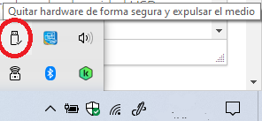

Explorador de archivos: elemento Este equipo
Al seleccionar el elemento Equipo del panel de navegación en el explorador de archivos, se nos muestra a la derecha las diferentes unidades de almacenamiento de que dispone nuestro PC. Estas se identifican con letras. La C corresponde al disco duro principal, si nos fijamos en el icono se muestra el símbolo de Windows, ya que es ahí donde está instalado el sistema operativo.
Al pulsar con el botón derecho sobre una unidad nos aparece un menú contextual donde podemos seleccionar Propiedades para mostrar una ventana con las características de la unidad en cuestión agrupadas en pestañas.
El cuadro de texto sirve para establecer un nombre para la unidad, podemos poner lo que queramos.
El espacio disponible que figura sobre el disco duro es inferior al que se mostraba en las características del PC en el momento de comprar el ordenador. Esto se debe a que aproximadamente se usa de 5% a 7% de la capacidad de esa unidad para grabar lo que se llama la tabla de orden y contenido que guarda información de en qué sectores del disco está contenida la información.
En el caso de que tengamos conectada una unidad USB es recomendable, antes de desconectarla del ordenador, extraerla con seguridad para evitar que la memoria se pueda corromper si el sistema la está usando. Para ello, podemos pulsar con el botón derecho sobre la unidad USB y luego la opción Expulsar. O bien, hacer clic en el icono:

Otra forma de ver cuánto espacio libre y ocupado tenemos en nuestras unidades de almacenamiento, podemos hacer clic con el botón secundario del ratón, luego en Configuración >Sistema > Almacenamiento. Aquí podemos ver cómo se está empleando ese almacenamiento.
Así, si nos estamos quedando sin espacio, podemos hacernos una idea de qué archivos están ocupando más en nuestro disco duro y decidir mejor qué elementos borrar.
Si tenemos conectado un pendrive, por ejemplo, es posible también ver sus características de uso del espacio pulsando en Ver el uso de almacenamiento en otras unidades y luego en la unidad correspondiente.
Otra característica interesante es que podemos decidir dónde queremos que se almacene los diferentes contenidos nuevos que creemos. Es la opción llamada Cambiar la ubicación de almacenamiento del contenido nuevo, también disponible en la ventana de Configuración > Almacenamiento.
Liberador de espacio en disco en Windows
Esta utilidad de Windows nos permite eliminar los archivos temporales:
- En el cuadro de búsqueda de la barra de tareas, escribimos liberador de espacio en disco y hacemos clic en el programa.
- Seleccionamos los elementos que queremos limpiar y, a continuación, Aceptar.
Espacios de almacenamiento
Puede ocurrir que en algún momento el equipo falle, ya sea a nivel de hardware, por ejemplo los discos duros, o a nivel de software, por ejemplo errores en el arranque o algún virus, lo que nos obliga a restaurar todo el equipo y en algunas ocasiones podemos perder información, si no hemos hecho una copia de seguridad. Para evitar esto, Windows posee una herramienta llamada Espacios de almacenamiento.
Los espacios de almacenamiento son unidades virtuales que podemos crear al agrupar dos o más unidades con el fin de crear una copia exacta de los datos, así, en caso de fallar alguna de las unidades, tendremos a mano la otra unidad con todos los datos completos e íntegros.
Esta herramienta está disponible en Configuración >Sistema > Almacenamiento.
El Administrados de discos
El Administrador de discos es una herramienta que nos permite gestionar las unidades de almacenamiento instaladas y crear, cambiar o eliminar las particiones de los discos.
Para abrir esta herramienta podemos hacer clic con el botón derecho del ratón en el botón Inicio y luego seleccionar Administración de discos. Las acciones que podemos realizar son las siguientes:
- Dar formato a un disco duro.
- Crear nuevos volúmenes o particiones.
- Formatear discos duros en NTFS, FAT y FAT32
- Crear discos virtuales
- Reducir una partición, normalmente para poder extender una partición vecina
- cambiar una letra de unidad o asignar una letra de unidad nueva.